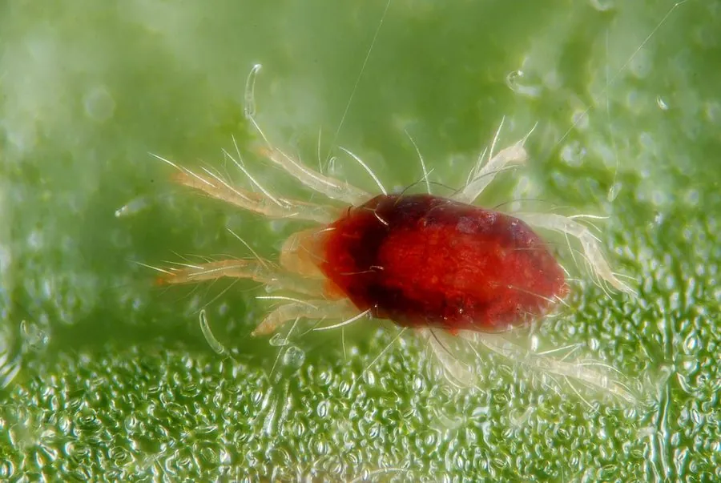

蛛形动物 · 动物界
二斑叶螨 Tetranychus urticae

体长不足 1 毫米的农业害螨，寄主植物超过一千种，繁殖极快、易暴发成灾，是温室和农田的重要害虫。
- 分类
- 门节肢动物门纲蛛形纲目绒螨目科叶螨科属叶螨属
- 栖息环境
- 农田、果园、温室、花卉及杂草的叶片背面
- 地理分布
- 全球分布，中国各地农田、温室和果园中广泛发生
- 保护级别
- IUCN 暂无评估；中国未列入国家重点保护名录
物种志
二斑叶螨雌螨体长约 0.4–0.5 毫米，雄螨更小，身体呈椭圆形，淡绿或黄绿色，背部两侧各有一块深色斑块，“二斑”之名由此而来；越冬个体和滞育个体则呈橙红色，常被误认为“红蜘蛛”。它有四对足，口器为刺吸式，靠刺穿植物叶片细胞吸取汁液。
它几乎遍布全球，在温室和农田中尤为常见，寄主植物超过一千种，包括棉花、蔬菜、果树和花卉。二斑叶螨繁殖极快，在适宜温度下十几天即可完成一代，一年可发生十几代；密度高时会在叶片上结出细密蛛丝，造成叶片褪绿、卷曲甚至脱落。它主要靠孤雌生殖和风力、苗木传播扩散。防治上应加强通风、及时清除虫叶，必要时轮换使用杀螨剂以避免抗药性；它不叮咬人类，对人体没有直接危害。
形态与习性
- 食性刺吸植物叶片汁液，寄主超过一千种植物
- 体长雌螨 0.4–0.5 mm，雄螨更小
- 寿命一代约 10–20 天，一年可发生十几代
- 繁殖卵生，可孤雌生殖，单雌产卵数十至上百枚
- 危害叶片褪绿卷曲，严重时结丝、落叶
- 活动节律多在叶背活动，高温干燥时暴发
趣味知识
- 二斑叶螨体长不到 1 毫米，常被误称为“红蜘蛛”，但它并不是真正的蜘蛛。
- 高温干燥时它繁殖极快，可在短期内让整片作物叶片褪绿卷曲。
- 长期单一使用同一种杀螨剂容易使其产生抗药性，需轮换用药。